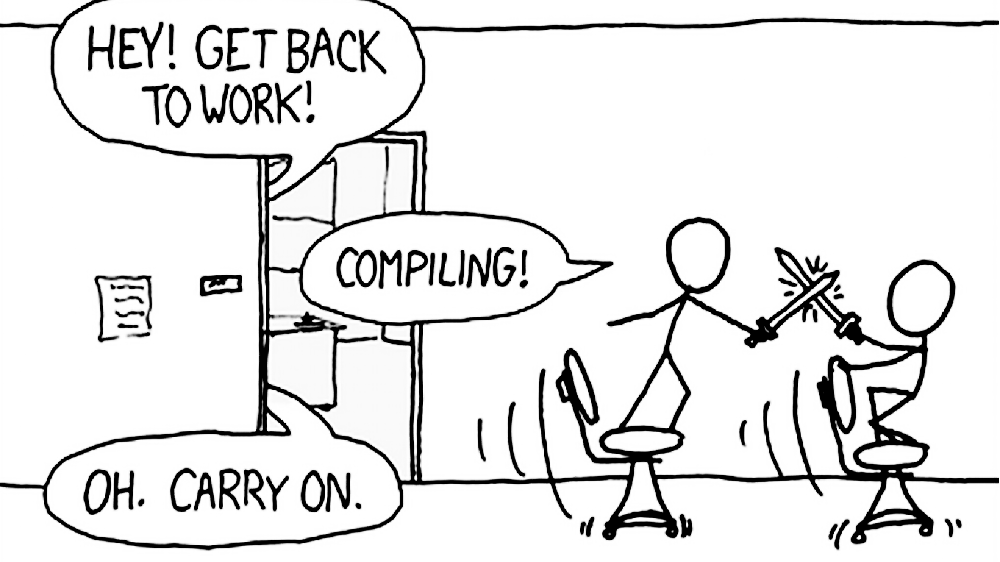
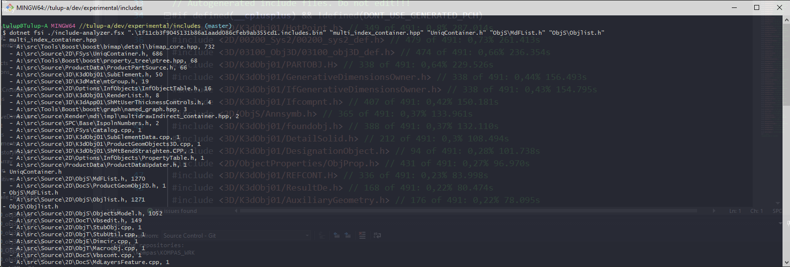
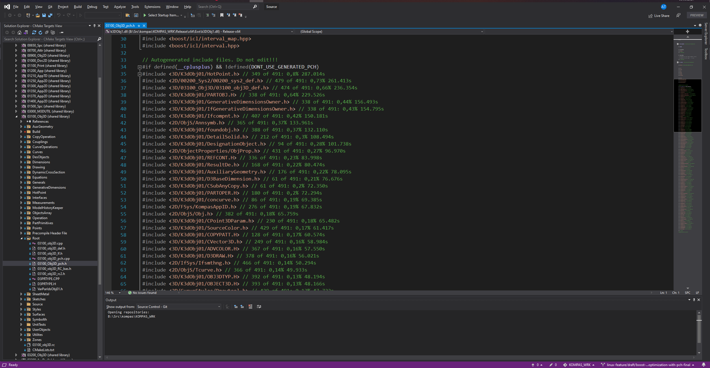
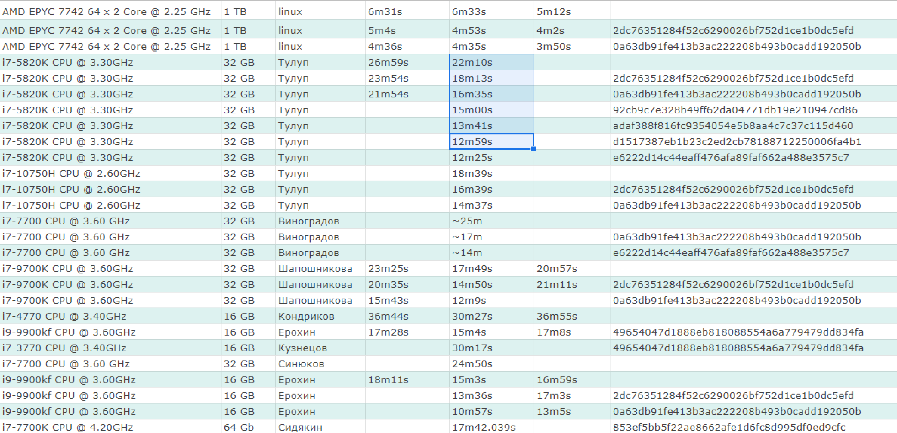

Ускорение сборки проектов на C++
Александр Тулуп
tulup@ascon.ru
Проблема

Что есть ?
- ~3 миллиона строк
- ~4500 .cpp & ~4000 .h
- 55 проектов
- boost, stl, winapi
Поиск узких мест
- Resharper C++ Analyze Includes
- C++ Build Insights
Resharper C++ Analyze Includes

C++ Build Insights
- Visual Studio 2019
- latest Windows ADK
perf_msvcbuildinsights.dll-> WPA directoryperfcore.iniaddperf_msvcbuildinsights.dll
C++ Build Insights
vcperf /start MySessionName- compile your project
vcperf /stop MySessionName outputFile.etl
C++ Build Insights

C++ Build Insights

Include What You Use (iwyu)
- удаляет лишние include
- добавляет forward declaration
Include What You Use (iwyu)
llvm-DLLVM_ENABLE_PROJECTS="clang;clang-tools-extra"
Include What You Use (iwyu)
// найти лишние include
iwyu_tool -j 256 -p compile_commands.json -- -w > iwyu_res.cpp
// применить исправления
fix_includes.py < iwyu_res.cpp
PCH
vcperf /start MySessionName- compile your project
vcperf /stopnoanalyze MySessionName outputFile.etl
PCH

PCH

Результаты

Результаты
https://docs.google.com/spreadsheets/d/1cbizmv5p2pZk-3vLuv1MqV849x4IXV85vQmua3JO_F8/edit#gid=0

Результаты